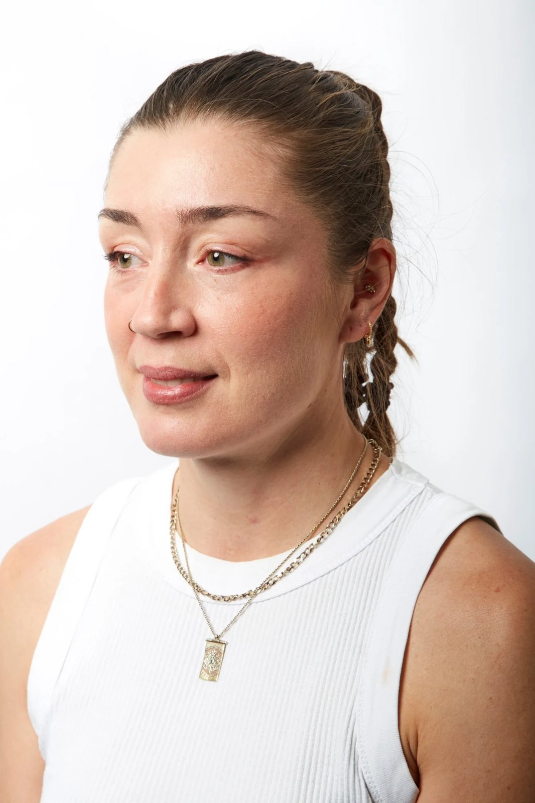

About
Alessia Zanetti (b. 1986, Italy) is an Eora/Sydney-based artist whose practice has evolved from large-scale commercial murals to oil painting on canvas. Her contemporary works merge the vivid colour and hyperreal clarity developed through her mural practice with a more expressive and gestural approach to painting.
Drawing on the eighteenth-century ceiling frescoes of Venice, where she previously lived, Zanetti employs an expressive visual language that moves between abstraction and figuration, using dramatic contrasts of light to heighten and intensify her palettes. Through this approach, Zanetti explores a contemporary sense of place within a hypermobile world, considering how local perception, embodied experience, and the immediate environment shape our perception of reality.
Curriculum Vitae
Education
- 2026
- Bachelor of Fine Arts (Honours), National Art School, Sydney
- 2025
- Bachelor of Fine Arts, National Art School, Sydney
Group exhibitions
- 2026
- Post-Grad Show, National Art School, Sydney
- 2026
- Narratives of Body, Self and World, curated by Nina Maskiel and Tian Zhang, Scieppan Gallery, Sydney
- 2026
- This Is Not Fantasy, BFA (Hons) exhibition, curated by Chelsea Lehmann, National Art School, Sydney
- 2025
- Grad Show, curated by Katrina Cashman, National Art School, Sydney
- 2019
- Aberration, curated by Apparition Media, Melbourne
Public art projects and commissions
- 2022
- Public mural, Tarcutta Public School, commissioned by Wagga Wagga City Council
- 2022
- Public mural, International Convention Centre Sydney, commissioned by No Vacancy Expo
- 2022
- Public mural, Macquarie Fields Public School, commissioned by Macquarie Fields Public School
- 2022
- Public mural, St Gabriel’s Catholic Primary School, Bexley, commissioned by St Gabriel’s Catholic Primary School
- 2021
- Community mural, Headway Adult Development Program, Bankstown, commissioned by the City of Canterbury
Work experience
- 2021–present
- Mural Artist and Co-founder, Donne Murals, Coogee, Sydney
- 2020–present
- Commission artist
- 2017–2021
- Mural Artist, Apparition Media, Darlinghurst, Sydney